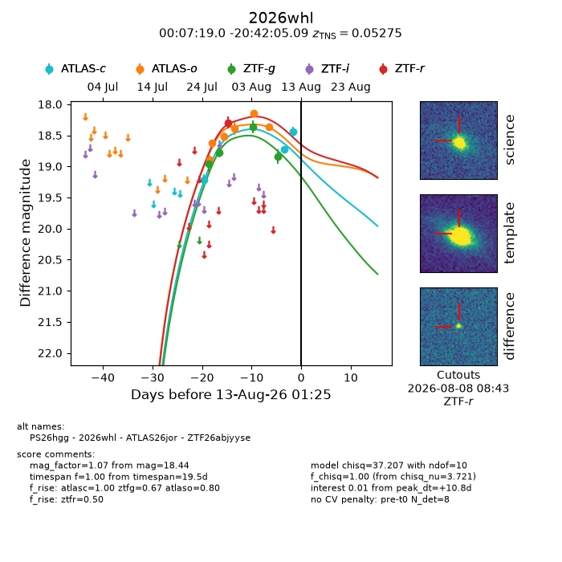
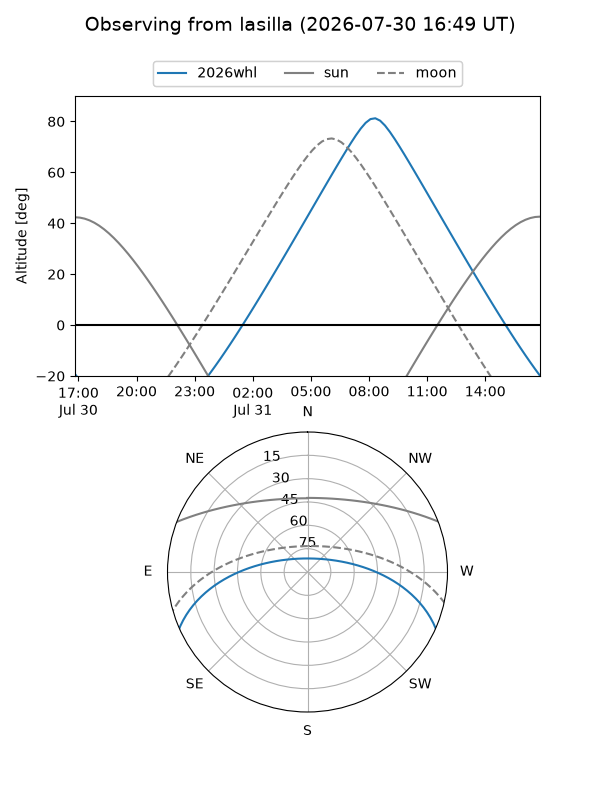
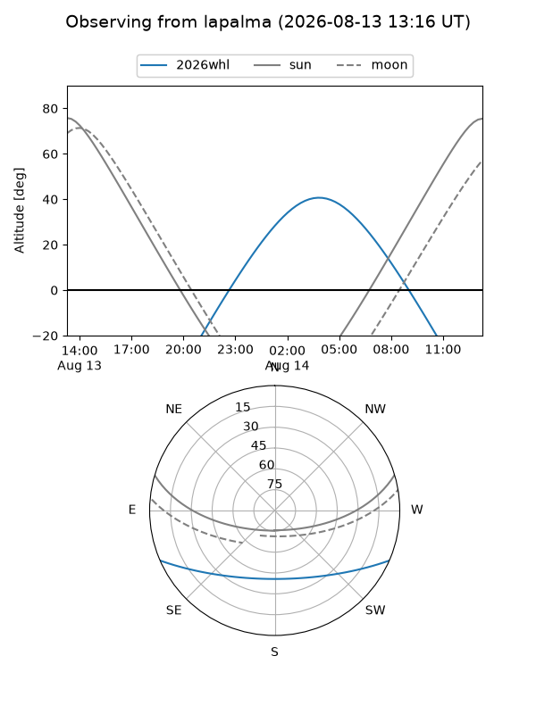
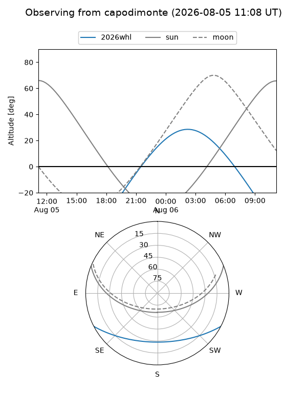
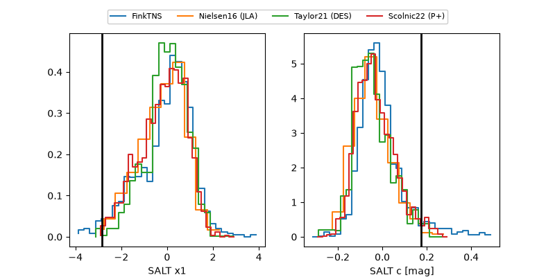

2026whl
Target 2026whl at 2026-08-13 01:28
Aliases and brokers:
FINK-ZTF: ztf.fink-portal.org/ZTF26abjyyse
Lasair-ZTF: lasair-ztf.lsst.ac.uk/objects/ZTF26abjyyse
ALeRCE-ZTF: alerce.online/object/ZTF26abjyyse
YSE-PZ: ziggy.ucolick.org/yse/transient_detail/2026whl
TNS name: wis-tns.org/object/2026whl
Direct TNS query: direct search
alt names
ZTF26abjyyse (ztf,fink_ztf)
2026whl (tns,yse)
ATLAS26jor (atlas)
PS26hgg (panstarrs)
Coordinates:
equatorial (ra, dec) = 1.8293,-20.70141
equatorial (HMS+DMS) = 00:07:19.04,-20:42:05.09
galactic (l, b) = (63.1057,-78.05205)
Flags:
TNS type: SN Ia
TNS redshift: 0.0527
peak dt: +10.8
Photometry:
last atlasc=18.44, atlaso=18.37, ztfg=18.84, ztfr=18.29
3 atlasc, 6 atlaso, 4 ztfg, 1 ztfr detections
Lightcurve

Visibility



Additional plots
